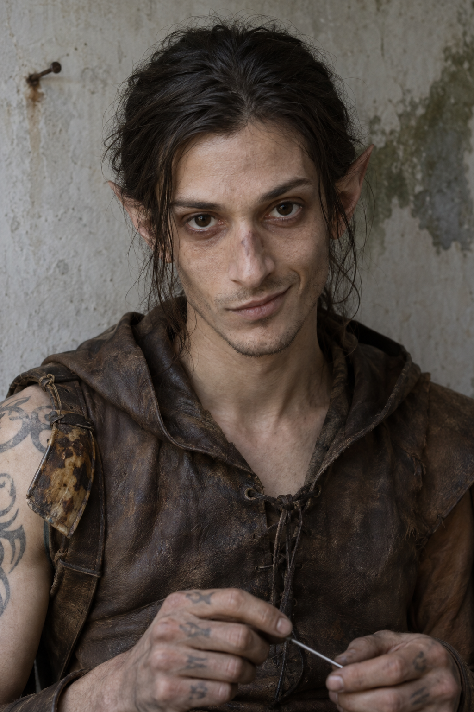
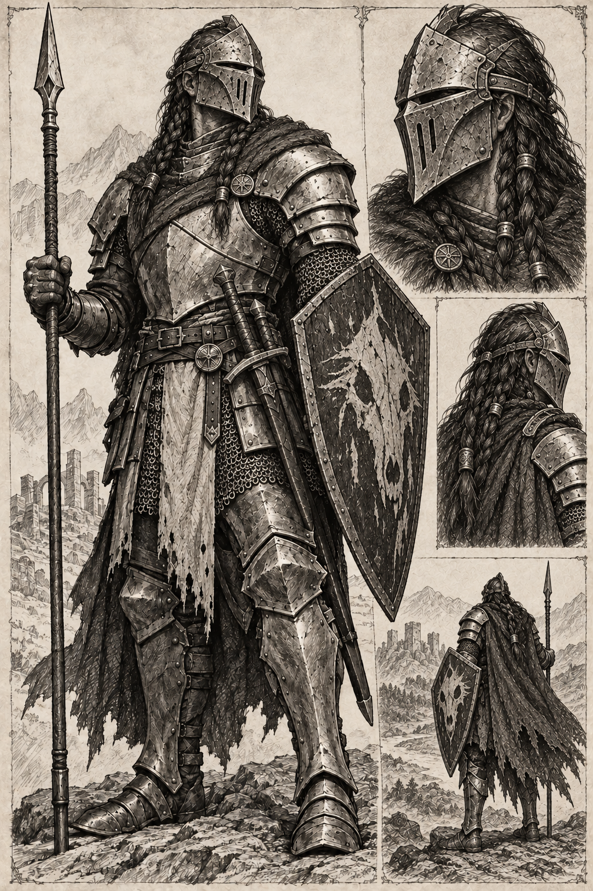
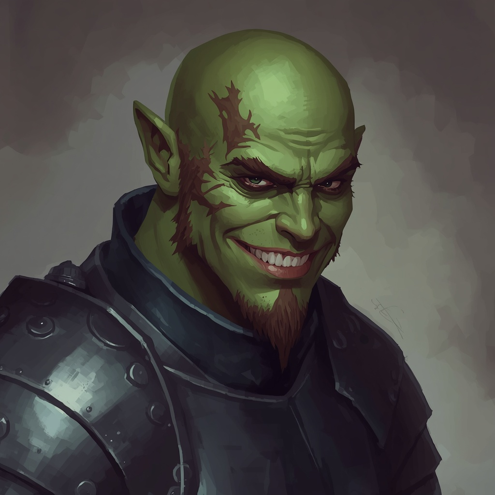
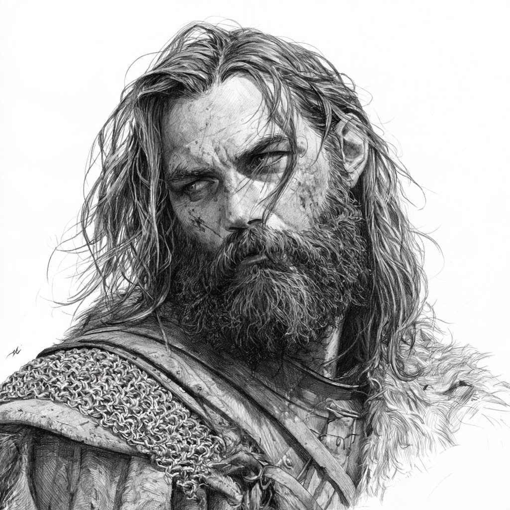
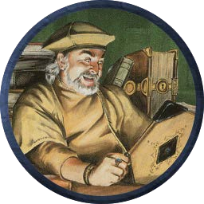

The five
All five are 1st level, all five are active, and all five have been in every session so far.
| PC | Player | Ancestry | Class and level | Background | XP | Sheet |
|---|---|---|---|---|---|---|
| Elowyn | Ian | Essanin elf | Thief 1 | Farmer | 828 / 1,200 | Archived, 2026-11-01 |
| Anglad the Faceless | Sebastian | Sabbatean | Fighter 1 | Miner, groom | 828 / 2,000 | Archived, 2026-11-03 |
| Bozz the Well Endowed | Max | Sabbatean | Fighter 1 | Leatherworker | 828 / 2,000 | Archived, 2026-11-04 |
| Dagen | Jordan | Human | Ranger 1 | Navigator | 790 / 2,250 | Archived, 2026-11-03 |
| Illiterate Ed | Alex | Half-elf | Magic User 1 | Forester | 602 / 2,500 | Archived, 2026-11-02 |
Elowyn

Essanin Elf Thief 1, Neutral. Background: farmer. Station in life: "Shitbird". The latest sheet, dated 2026-11-01, supplies the detail below.
| Field | Value |
|---|---|
| Abilities | STR 12, INT 14, WIS 14, DEX 17, CON 8, CHA 9 |
| HP / AC / THAC0 | 5 / 5 / 19 |
| Saving throws | Death and poison 13, wands 14, paralysis and petrification 13, breath 16, spells 15; +1 on saves against magic |
| XP | 828 / 1,200, with the +10% prime requisite |
| Movement | 90' (30'); encumbered at 4 equipped and 12 packed |
| Languages | Alignment, Common, Elvish, Gnoll, Hobgoblin, Orcish; literate |
| Attacks | Sword +0 melee, 1d8; short bow +2 missile, 1d6 at 50' / 100' / 150'; back-stab +4, double damage |
| Thief skills | Climb 1, traps 2, hear noise 2, hide 2, move silently 2, open locks 2, pick pockets 1, read languages 1, each in 6 |
Equipped: leather armour, sword, short bow and 18 arrows. Packed: backpack, 5 torches, 3 iron rations, waterskin, tinderbox, thieves' tools, lantern, 2 flasks of oil, a 10' pole, block and tackle, 20 caltrops, and 13 gp.
Background. A farmer's son from an Essanin waystation, and the waystation's troublemaker before he turned thief. His father Keebler was a famous adventurer killed by a drunk owlbear, and the swirling tattoos honour the ancestor god Leyllwynll. A pale scar crosses the bridge of his nose.
Proficiencies. Normal sword, short bow and dagger; -3 with anything else. Weapon specialisation is closed to a semi-martial thief.
Anglad the Faceless

Sabbatean Fighter 1, Neutral, title Veteran. Background: miner and groom. The v2 sheet, archived 2026-11-02 and revised 2026-11-03, supplies the detail below.
| Field | Value |
|---|---|
| Abilities | STR 17 (+2), INT 9, WIS 8 (-1), DEX 10, CON 12, CHA 3 |
| HP / AC / THAC0 | 10 / 2 / 19 |
| Saving throws | Death and poison 12, wands 13, paralysis and petrification 14, breath 15, spells 16; WIS -1 on saves against magic |
| XP | 828 / 2,000, with the +10% prime requisite |
| Movement | 60' (20'); 6 equipped and 7 packed |
| Languages | Common, Orcish; literate |
| Attacks | Long sword +3, 1d8+3; spear +3, 1d6+3; dagger +2, 1d4+2 |
Equipped: plate armour (two slots), a shield bearing a wolf's skull, long sword, dagger and spear. Worn: a mask, which does not count as carried gear. Packed: backpack, mirror, rations, iron spikes, waterskin, torches (6) and a tinderbox. Money: 14 gp, 1 sp, 5 cp.
The mask. As a boy he saved his sister from a wolf attack. The wolf took most of his nose, cheek and lips and infection made it worse; he has worn a mask ever since, and the scarring left him socially awkward. He stands 6 ft 5 in.
Bozz the Well Endowed

Sabbatean Fighter 1, Neutral, title Veteran. Background: leatherworker. The v2 sheet, archived 2026-11-04, supplies the detail below.
| Field | Value |
|---|---|
| Abilities | STR 17 (+2), INT 12, WIS 13 (+1 on saves vs magic), DEX 12, CON 16 (+2), CHA 9 |
| HP / AC / THAC0 | 10 / 2 / 19 |
| Saving throws | Death and poison 12, wands 13, paralysis and petrification 14, breath 15, spells 16; +1 on saves against magic |
| XP | 828 / 2,000, with the +10% prime requisite |
| Movement | 90' (30'); 4 equipped and 7 packed |
| Languages | Common, Orcish, Neutral; literate |
| Attacks | Mace +3, 1d6+3; crossbow +1, 1d6+1 |
Equipped: plate mail (two slots), a mace and a shield. Packed: backpack, tinderbox, 5 torches, waterskin, 1 iron ration, a large sack, and a crossbow with 20 bolts. Money: 10 gp.
Dagen

Human Ranger 1, Neutral. Background: navigator. The v2 sheet, archived 2026-11-03, supplies the detail below.
| Field | Value |
|---|---|
| Abilities | STR 14 (+1), INT 9, WIS 12, DEX 13 (+1), CON 12, CHA 6 (-1) |
| HP / AC / THAC0 | 8 / 3 (4 without shield) / 19 |
| Saving throws | Death and poison 12, wands 13, paralysis and petrification 14, breath 15, spells 16 |
| XP | 790 / 2,250, with the +5% prime requisite |
| Movement | 90' (30'); 5 equipped and 8 packed |
| Languages | Common, Neutral; literate |
| Ranger abilities | Surprised only on a 1; forage 2-in-6; hunt 5-in-6; +1 attack and damage against giants and related creatures; pursuit evasion reduced by 10%; 50% to hide and move silently in the wild; tracking by the book's table |
| Attacks | Short sword +2, 1d6+2; sling +1, 1d4 |
Equipped: chainmail (two slots), shield, sling and stones, short sword. Packed: backpack, waterskin, torch, crowbar, grappling hook, rope 50', iron rations (3 days), Candlecap mushrooms. Money: 13 gp, 3 sp.
Background. A navigator by trade, and a ranger and hunter. The clean Session 1 notes call him patient as a snare. The sheet carries no backstory.
Proficiencies. Sling, short bow, and the short sword, which the sheet marks as specialised. The short sword takes 1 slot, so three of the four martial slots are spent: sling 1, short bow 1, short sword 1. One slot is unassigned.
Illiterate Ed

Half-Elf Magic User 1, Neutral, of the Kythari. Background: forester. The sheet, received 2026-11-02, supplies the detail below.
| Field | Value |
|---|---|
| Abilities | STR 13, INT 5, WIS 13, DEX 9, CON 13, CHA 9 |
| HP / AC / THAC0 | 3 / 5, AC 9, THAC0 19 |
| Saving throws | Death and poison 13, wands 14, paralysis and petrification 13, breath 16, spells 15; +1 on saves against magic |
| XP | 602 / 2,500, with the -20% prime requisite for INT 5 |
| Movement | 120' (40'); 3 equipped and 11 packed |
| Languages | Elvish; no literacy recorded |
| Spells | Hold Portal, Protection from Evil, Shield, Ventriloquism, Read Magic; Detect Magic at will |
Equipped: two daggers and a wand of magic missile, command word "Shras". Packed: two flasks of oil, marbles, twine, mirror, rope, scroll case, spell book, the Archivist's spellbook, waterskin, iron rations and a bullseye lantern. Unencumbering: a Fire Rock, a Lotus Coal, a mustard yellow cap and candlecap mushrooms, none of which counts as carried gear. Money: 6 gp.
The Archivist's book. Carried, holding Floating Disc, Light, Protection from Evil and Read Languages at 1st level, and Invisibility and Web at 2nd. It is the book the two divine scrolls were traded for in Session 3.
Proficiencies. None declared. A magic-user is non-martial, so he has one slot at 1st level and -5 with anything else. He carries two daggers and the wand, and no weapon is named as proficient.
Dio
An urchin of eight from the ruin north-west of the plaza, hired to lead the party to Lady Danarose's house and then kept on as torchbearer. The DM classed him as a hireling rather than an NPC on 2026-10-27.
| Term | Detail |
|---|---|
| Role | Urchin torchbearer |
| Age | 8 |
| Employer | The party |
| Fee | 1 sp to guide the party to Lady Danarose |
| Paid to Pablo | 5 sp for letting Dio go along |
| Tip | 1 ep for silence at the urchin ruin |
| Share of XP or treasure | None recorded; as a hireling he takes no share of exploration XP |
He is the party's torchbearer, and his torch was the first light source the giant lantern moths went for.